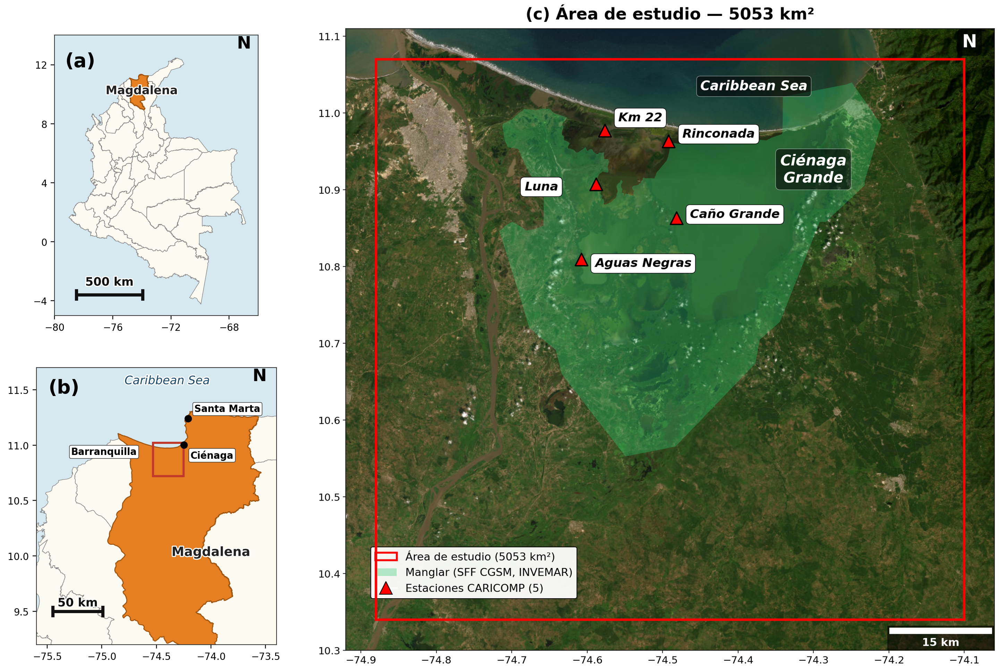
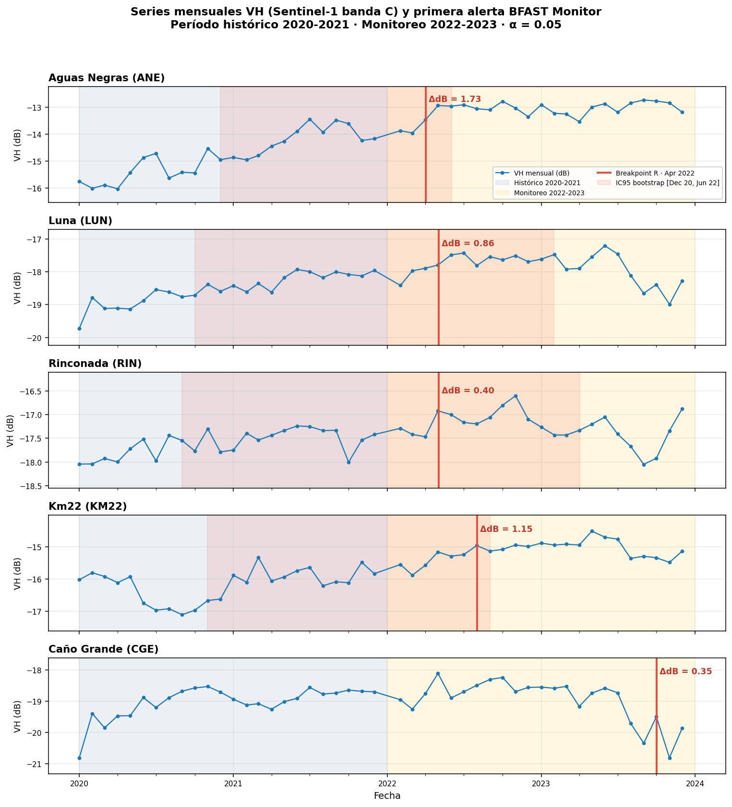
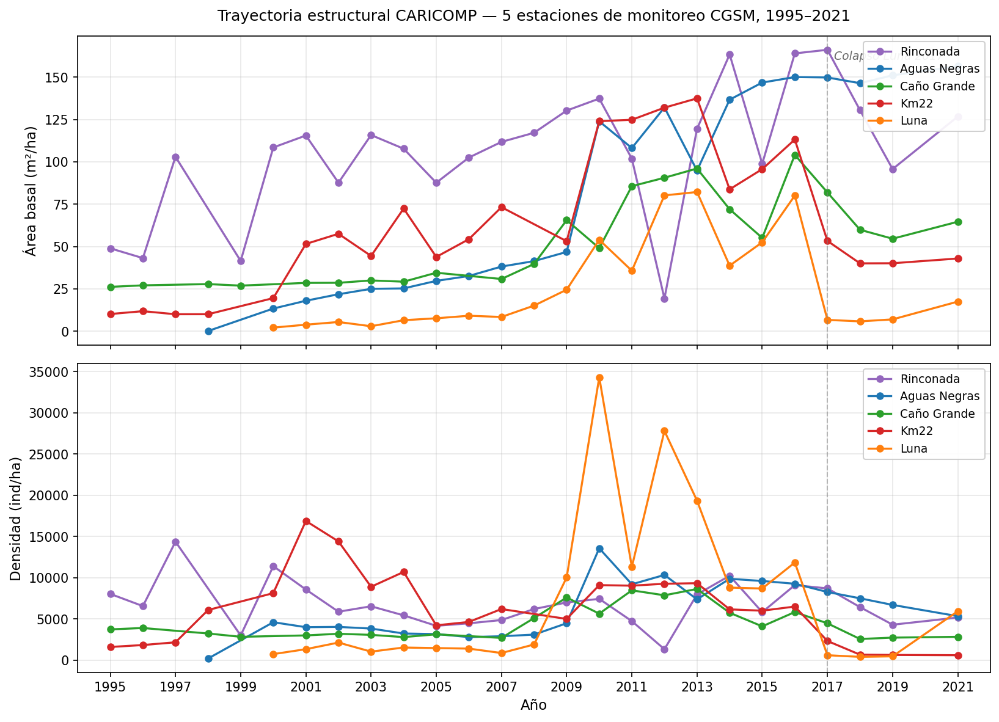
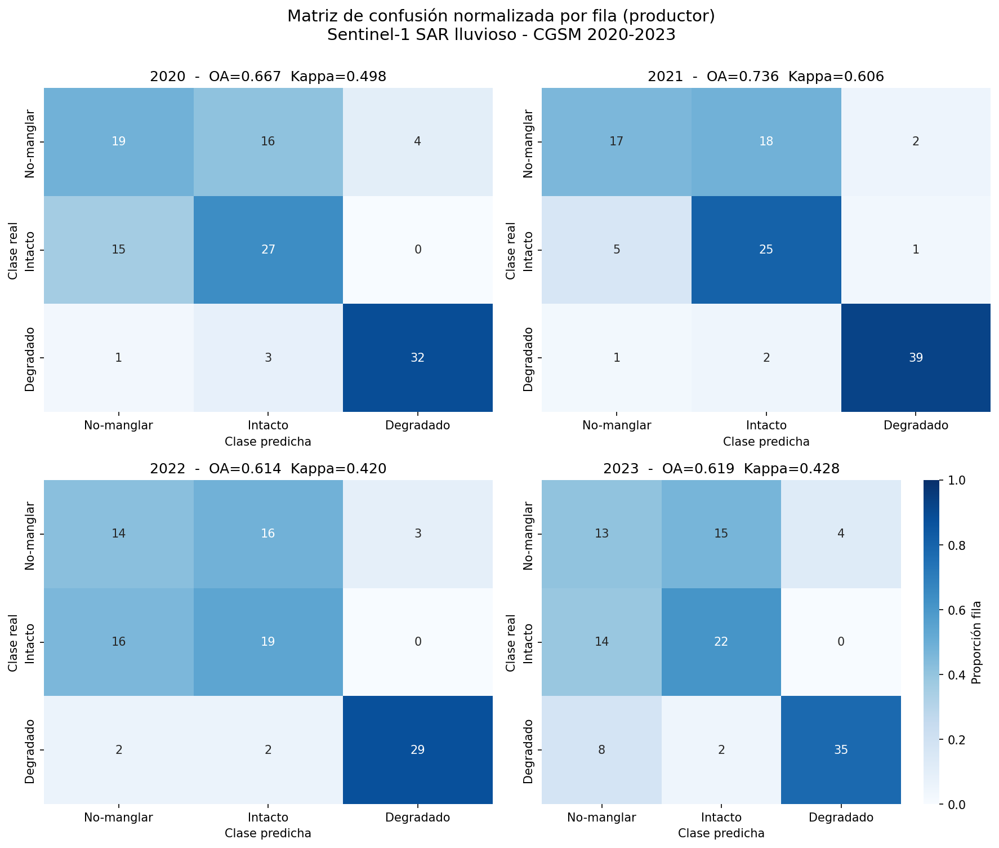
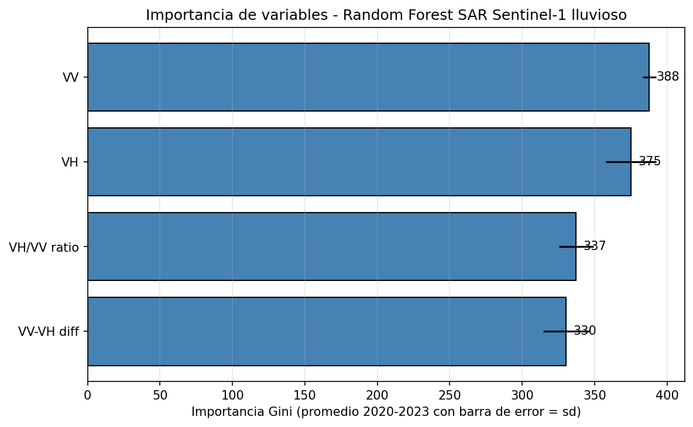
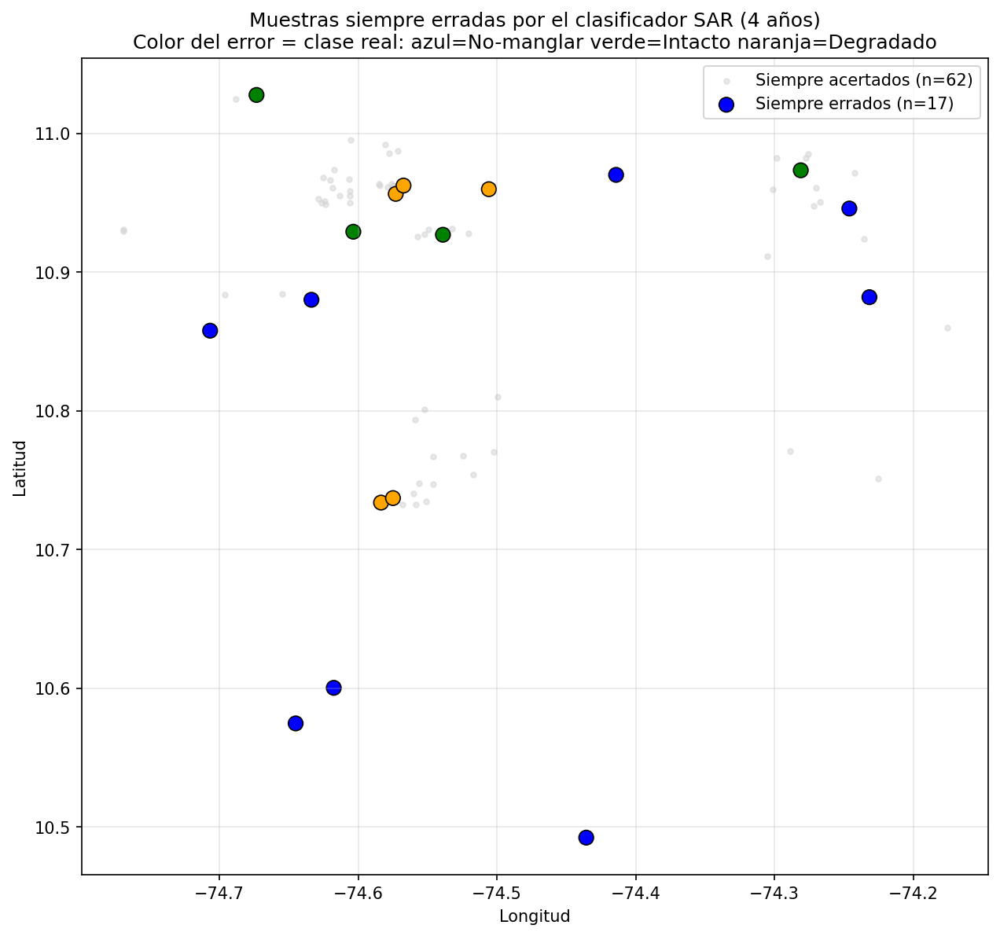
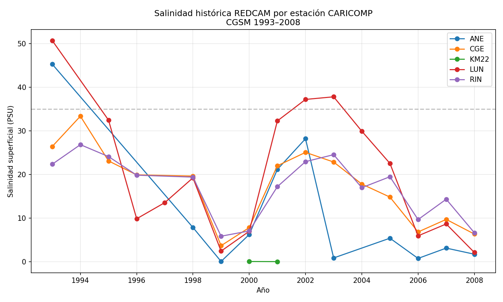
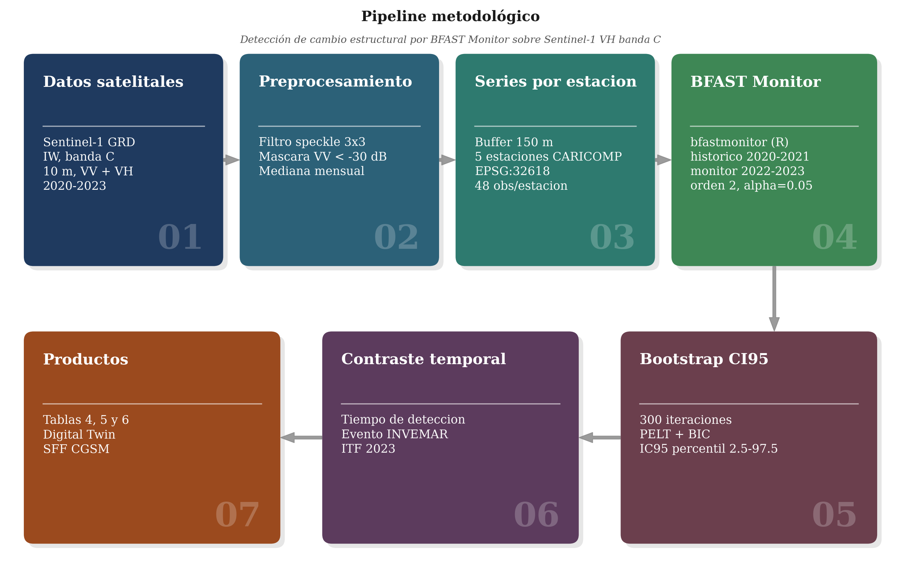
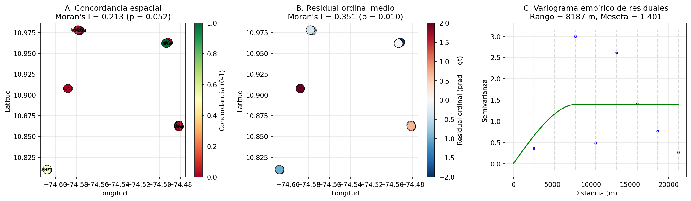
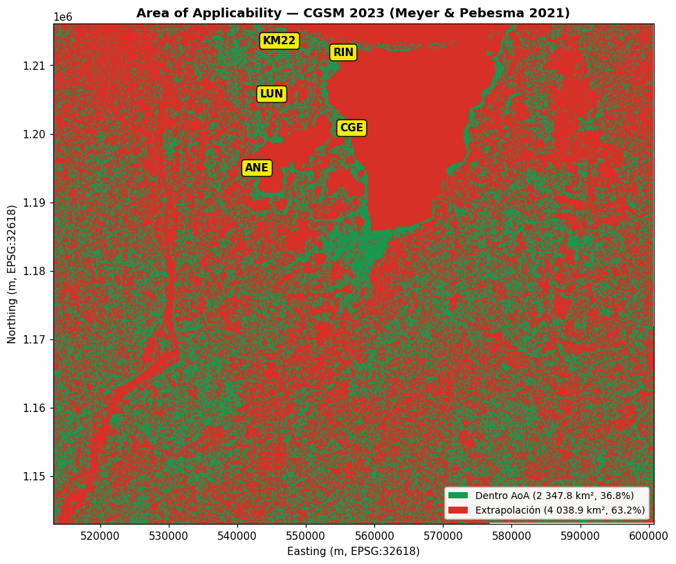

Manglar de la CGSM · Random Forest (Informe 1) + BFAST Monitor (Informe 2) 2020-2023 · alerta temprana Digital Twin
Caso de estudio: Ciénaga Grande de Santa Marta (CGSM), Colombia. Línea de trabajo replicando Kotikot et al. (2024) y extendiendo con SAR y validación in-situ INVEMAR/CARICOMP.

Preguntas de investigación
Línea de tiempo de los informes
Informe 1 — Replicación Kotikot et al. (2024)
Random Forest sobre Sentinel-2 SR, temporada seca, 3 clases (intacto/degradado/no-manglar), 2020-2023.
accuracy 98.5%Kappa 0.978+14.9% cobertura 2020-2023limitación: validación solo espectralInforme 2 — Validación in-situ + extensión SAR · Fusión 4 clases
Sentinel-1 lluviosa + CARICOMP/INVEMAR (5 estaciones, 1995-2021) + Fusión S2⨁S1 a 4 clases (No-manglar/Degradado/Regular/Intacto).
Luna AB ↓67% 2015-17Km22 densidad ↓92% 2015-18Mejora neta +443 km² 2020-23Insumo Digital Twin tesisEstructura del repositorio público
Disponible en github.com/linaq11/Informe_2 bajo licencia MIT. Esta es la estructura del repo que el evaluador puede clonar o explorar directamente.
Las series temporales VH agregadas por estación (ESTACIONES R/CGSM_VH_mensual_estaciones.csv), los rasters intermedios mayores a 50 MB y el material de exploración no esencial viven solo en el entorno local de trabajo; son reproducibles ejecutando los scripts GEE incluidos en el repo.
Flujo de Trabajo Interactivo
Click en cualquier nodo para ver detalle completo (script, parámetros, resultados). Cambia entre pipelines con las pestañas.
Informe 1 — Resumen y Hallazgos Replicación Kotikot et al. (2024)
"Adapting a Google Earth Engine Random Forest workflow for mangrove mapping in a turbid tropical lagoon: a replication study at Ciénaga Grande de Santa Marta, Colombia"
Objetivo
Hallazgos principales
Contribución metodológica destacada
Informe 1 — Metodología paso a paso
Definición del AOI
Heredado y validado contra cartografía SIGMA/INVEMAR. Cubre el complejo lagunar completo incluyendo Pajarales y SFF CGSM.
Adquisición Sentinel-2 SR
Filtrado por AOI, fecha (temporada seca dic-mar de cada año 2020-2023) y CLOUDY_PIXEL_PERCENTAGE < 20%.
Preprocesamiento
• Filtrado de nubes con QA60 + s2cloudless.
• Enmascaramiento por elevación (DEM SRTM, descartar >20 m).
• Máscara cuerpos de agua (NDWI dinámico).
• Máscara cobertura vegetal mínima (NDVI threshold).
Composite mediano anual
Reducción median() sobre stack temporal filtrado. Resolución nativa 10 m.
Cálculo de bandas derivadas
• NDVI = (B8 - B4) / (B8 + B4)
• NDBaI = (B11 - B12) / (B11 + B12) (Bare-soil index, sensible a degradación)
• Altura de dosel proxy derivada del DEM canopy.
Etiquetado de entrenamiento
Manglar intacto / manglar degradado / no-manglar (agua, suelo expuesto, otros usos).
Entrenamiento Random Forest
Inputs: bandas originales B2-B12 + NDVI + NDBaI + altura dosel.
Clasificación anual
Aplicación del clasificador entrenado sobre los 4 composites anuales (2020, 2021, 2022, 2023). Outputs: 4 rasters categóricos a 10 m.
Validación
Split 70/30 train/test sobre los 371 puntos · matriz de confusión · accuracy global · Kappa · accuracies por clase.
acc 98.5%Kappa 0.978Análisis multitemporal
Cuantificación de áreas por clase y año. Mapas de cambio. Tabla de transiciones. Reporte de ganancia/pérdida neta.
+14.9% manglar 2020-2023Informe 1 — Datos y Scripts
Datos de entrada
| Recurso | Fuente | Uso |
|---|---|---|
COPERNICUS/S2_SR_HARMONIZED | GEE Public | Imágenes ópticas multitemporales |
| SRTM DEM | USGS/NASA | Máscara elevación + altura dosel proxy |
SHP CGAM/AOI_CGSM.shp | Cartografía propia | AOI 5 053 km² |
| 371 puntos etiquetados | Etiquetado manual | Train/test RF |
Notebooks y scripts
| Archivo | Propósito |
|---|---|
GEE/Tutorial32_CGSM.ipynb | Tutorial 32 adaptado a CGSM (geemap) |
INFORME 1 COD.txt | Código GEE consolidado del Informe 1 (referencia) |
Quintero_Informe1.docx/.pdf | Documento entregable final |
Quintero_Recuperacion1.pdf | Versión recuperación |
Correcciones_Informe1.md | Respuestas a evaluador (resumen corregido, 98.5% acc) |
Outputs
- 4 rasters de clasificación anual (2020-2023) → exportados a Assets para Informe 2
- Tabla áreas por clase y año
- Mapas de cambio 2020↔2023
- Matriz de confusión + métricas
Réplica complementaria — Milà et al. (2024)
| Notebook | Caso |
|---|---|
RF_spatial_proxies/RF_spatial_proxies_pm25.ipynb | Réplica RF PM2.5 España (local) |
RF_spatial_proxies/RF_spatial_proxies_pm25_colab.ipynb | Versión Colab |
RF_spatial_proxies/RF_spatial_proxies_temp.ipynb | Réplica RF temperatura aire España |
RF_spatial_proxies/RF_spatial_proxies_temp_colab.ipynb | Versión Colab |
carlesmila-RF-spatial-proxies-d9e300b/R/case/*.R | 11 scripts R originales (case_extract, case_modpm25, case_modtemp, case_prepare, case_RFsp, sim_*) |
Informe 2 — Resumen y Hallazgos Detección de cambio · BFAST Monitor · Alerta temprana Digital Twin
El componente A del proyecto intentó clasificar el estado del manglar (intacto / regular / degradado) combinando Sentinel-2 + Sentinel-1, pero cinco pruebas independientes mostraron que ese enfoque no funciona con la banda C de SAR. En lugar de descartar los datos SAR, el informe cambió la pregunta: en vez de preguntar qué estado tiene el manglar hoy, pregunta cuándo ocurrió un cambio. La misma banda C que falla para clasificar sí detecta el momento exacto del cambio con magnitudes entre 0.35 y 1.73 dB, usando la función bfast::bfastmonitor en R (Verbesselt et al. 2012).
Objetivos específicos
- Construir series mensuales de retrodispersión VH sobre las 5 estaciones CARICOMP entre 2020 y 2023, y aplicar BFAST Monitor (período histórico 2020-2021, monitoreo 2022-2023, significancia α = 0.05).
- Acompañar con bootstrap CI95 (300 iteraciones) sobre los residuales del componente armónico-estacional (Verbesselt et al. 2010).
- Comparar la fecha y magnitud (dB) de las primeras alertas con el reporte INVEMAR ITF 2023, que cuantifica la pérdida del 33 % del arbolado en Aguas Negras entre Oct 2022 y Sep 2023.
4 hallazgos del Resumen
Tabla 1 — Primera alerta BFAST Monitor por estación
Período histórico 2020-2021 · monitoreo 2022-2023 · α = 0.05 · modelo armónico orden 2. Filas ordenadas cronológicamente por fecha de primera alerta.
| Estación | Código | Primera alerta | Año decimal | Magnitud (dB) | Cambio VH |
|---|---|---|---|---|---|
| Aguas Negras | ANE | Abr 2022 | 2022.250 | 1.73 | +49 % |
| Luna | LUN | May 2022 | 2022.333 | 0.86 | +22 % |
| Rinconada | RIN | May 2022 | 2022.333 | 0.40 | +10 % marginal |
| Km22 | KM22 | Ago 2022 | 2022.583 | 1.15 | +30 % |
| Caño Grande | CGE | Oct 2023 | 2023.750 | 0.35 | +8 % tardía |
La direccionalidad positiva del cambio (VH por encima del modelo histórico) se asocia con cambios de inundación, exposición de superficies tronco-agua por apertura del dosel o cambios en humedad foliar durante el evento El Niño 2022-2023.

bfast::bfastmonitor (Verbesselt et al. 2012, α = 0.05). Sombra roja translúcida: IC95 bootstrap (300 iteraciones, Verbesselt et al. 2010). Anotación ΔdB: magnitud del cambio reportada en la Tabla 1.Tabla 2 — Bootstrap CI95 sobre los breakpoints (300 iteraciones)
| Estación | Breakpoint (año dec.) | IC 95% bootstrap | Amplitud (m) | P(sin BP) |
|---|---|---|---|---|
| Aguas Negras | 2021.42 | [2020.92, 2022.42] | 18.0 | 0.000 |
| Caño Grande | 2020.58 | no estable | — | 0.930 |
| Km22 | 2022.33 | [2020.83, 2022.67] | 22.0 | 0.000 |
| Luna | 2021.42 | [2020.75, 2023.08] | 28.0 | 0.000 |
| Rinconada | 2021.08 | [2020.67, 2023.25] | 31.0 | 0.080 |
Tabla 3 — Validación tiempo de detección contra eventos documentados INVEMAR
| Estación | Evento documentado | Fecha del evento | Tiempo de detección |
|---|---|---|---|
| Aguas Negras | Pérdida 33% arbolado (INVEMAR ITF 2023) | Oct 2022 – Sep 2023 | 6 meses ANTES del inicio |
| Luna | Colapso 2017 + dinámica bidireccional | 2017 + recurrencia | Reorganización post-colapso |
| Rinconada | Sin perturbación documentada | Estabilidad | Respuesta climática (0.40 dB, marginal) |
| Km22 | Pérdida sostenida 2015-2018 (crónica) | Continuo desde 2015 | Empeoramiento del patrón crónico |
| Caño Grande | Recuperación parcial 2018-2021 | Sin evento agudo | Cambio tardío débil (0.35 dB) |
Componente A — 5 pruebas que motivaron la reformulación (Anexos E, F, G, I, J)
| Anexo | Prueba | Hallazgo cuantitativo |
|---|---|---|
| E | Sensibilidad a unidad de validación (5 estaciones reubicadas vs 15 parcelas DwC-A) | Concordancia 22%, Kappa = -0.137 [IC95 -0.234, -0.049] sobre 90 obs |
| F | Autocorrelación espacial residual del RF reentrenado | Moran I = 0.351, p = 0.010; variograma ≈ 8 km |
| G | Sensibilidad a percentiles BA que definen las clases | Concordancia 40-50%, Kappa entre +0.05 y +0.18, IC95 incluye cero en los 4 esquemas |
| I | Area of Applicability sobre AOI 5 053 km² | 63.2% del AOI fuera del envoltorio; importancia SAR = 0 |
| J | Comparación RF vs GPBoost OvR con proceso gaussiano | RF kappa = -0.224, GPBoost kappa = -0.389 en 4 clases |
Consecuencia: la banda C tiene límites estructurales para responder la pregunta de estado del manglar. La reformulación hacia detección de cambio temporal aprovecha lo que la banda C sí puede hacer.
Estaciones CARICOMP analizadas (5)
| Código | Estación | Lat / Lon (WGS84) | Período monitoreo | Evento clave INVEMAR |
|---|---|---|---|---|
| ANE | Aguas Negras | 10.8097 / -74.6079 | 1998-2021 | -33% arbolado 2022-23 |
| CGE | Caño Grande | 10.8636 / -74.4816 | 1995-2021 | +17.3% BA (recuperación 2018-21) |
| KM22 | Km22 | 10.9774 / -74.5767 | 1995-2021 | -92% densidad 2015-18 |
| LUN | Luna | 10.9075 / -74.5882 | 2000-2021 | -87% BA en 2017 |
| RIN | Rinconada | 10.9632 / -74.4919 | 1995-2021 | Estabilidad 1995-2024 |

Galería complementaria
Material adicional del componente A y contexto ambiental. Las figuras principales (Fig 0, 1, 2, 3, 4, 5) están intercaladas con el texto arriba. Click para abrir en tamaño completo.




data/Arquitectura propuesta para el Digital Twin (3 capas complementarias)
Cómo entra BFAST Monitor al Digital Twin · 3 estrategias
El Informe 2 entregó una prueba de concepto: BFAST Monitor sobre VH banda C en 5 estaciones. La integración al Digital Twin admite tres roles distintos para el mismo algoritmo, con consecuencias diferentes sobre lo que el gemelo puede prometer.
La validación cruzada multisensor absorbe a las otras dos y resuelve el punto que el Informe 2 dejó abierto: un solo régimen sensor-algoritmo (banda C + clasificación supervisada) no responde la pregunta de estado. La respuesta no es sustituir banda C por banda L, sino articular los tres sensores donde cada uno aporta capacidad real.
- Opción 1 queda absorbida como interfaz del gemelo: el cinturón a 30 m se monitorea por píxel con el esquema multisensor, y la actualización cuasi-real es el producto final.
- Opción 3 queda absorbida como cierre de validación interna: los modelos supervisados se contrastan contra los breakpoints multisensor, lo que produce una métrica de coherencia entre la rama ML y la rama estadística clásica.
Tres rasgos que ninguna opción aislada defiende sola: independencia física entre los sensores que confirman el cambio, independencia estadística entre BFAST y los clasificadores supervisados, y operatividad temporal real (banda C aporta densidad temporal, banda L aporta significancia estructural).
Informe 2 — Metodología paso a paso

Componente A · Crítica del clasificador estático (5 pruebas convergentes)
Anexo E — Sensibilidad a la unidad de validación
Concordancia 22.4%, Kappa = -0.137 [IC95 -0.234, -0.049]. La clase Regular nunca es asignada por el clasificador pese a estar en las 100 muestras de entrenamiento.
Anexo F — Autocorrelación espacial residual
Moran I = 0.351, p = 0.010, z = 2.606. Variograma esférico con rango ≈ 8 187 m (separación inter-estación). Los errores no se distribuyen como ruido aleatorio sino como conglomerados espaciales.
supuesto de independencia violado
Anexo G — Sensibilidad a percentiles BA
Concordancia oscila 40-50%, Kappa entre +0.05 y +0.18. IC95 incluye cero en los 4 esquemas. La conclusión es invariante a la elección de umbrales razonable.
Anexo I — Area of Applicability (Meyer & Pebesma 2021)
63.2% del AOI fuera del envoltorio multivariado de entrenamiento (umbral DI = 0.123). Importancia agregada: SAR Sentinel-1 = 0.0% en las 4 bandas (VV, VH, VV-VH, VH/VV).
fusión óptico-SAR es efectivamente óptica
Anexo J — RF vs GPBoost con proceso gaussiano espacial
RF Kappa = -0.224 (3/15); GPBoost OvR Kappa = -0.389 (0/15). El cambio de algoritmo no rescata; sistema estructuralmente bimodal confirmado por Hansen GFC (cero candidatos Regular).
algoritmo espacial no resuelve el problemaComponente B · BFAST Monitor en R (Verbesselt et al. 2012) — eje principal
Series mensuales VH agregadas
Preprocesamiento: filtro speckle mediana focal 3×3, máscara de bordes VV < -30 dB, agregación temporal por mediana mensual. 48 observaciones por estación (Ene 2020 - Dic 2023).
BFAST Monitor con período histórico móvil
Modelo armónico de segundo orden sobre ciclo anual. Estadístico OLS-MOSUM acumulado sobre los residuales del modelo histórico cruza el umbral asintótico al nivel de significancia.
breakpoints en las 5 estacionesAbr 22 - Oct 23Bootstrap CI95 sobre breakpoints
Ajuste del modelo armónico sobre la serie completa, resampleo con reposición de residuales, suma al ajuste original, detección de breakpoint sobre cada réplica. IC95 = percentiles 2.5 y 97.5 de la distribución bootstrap.
presencia robusta en 4/5Componente C · Validación tiempo de detección contra INVEMAR ITF 2023
Cruce primera alerta BFAST × evento documentado
Tiempo de detección = diferencia en meses entre fecha del evento de campo y fecha del primer breakpoint del modelo. Tiempos negativos = detección anticipada.
Caso Aguas Negras: validación con el evento real
Primera alerta BFAST: Abr 2022 (1.73 dB, magnitud máxima). Detección 6 meses antes del inicio del período cuantificado por el reporte INVEMAR. El sistema de alerta del Digital Twin queda validado como detector independiente del ciclo de muestreo del programa CARICOMP.
alerta temprana validadaAnexo D · Exploratorio AGB con SAR banda L (continuación)
Iteración 3 — AGB allométrico INVEMAR
HV banda L ρ = 0.024 (n.s.), VH banda C ρ = 0.226 (n.s.). Predictor más fuerte: pendiente DEM ρ = 0.78, p < 0.001 — proxy del régimen hidrológico. Replicación rigurosa con escenas WBD multitemporales ASF Vertex queda como línea de continuación para el Digital Twin.
Informe 2 — Datos y Scripts
AOIs (Areas of Interest)
| Archivo | Cobertura | Área |
|---|---|---|
AOI/AOI_CGSM_grande_5053km2.geojson | CGSM completo | 5 053 km² |
AOI/AOI_CGSM_grande_inline.js | Versión inline GEE | — |
AOI/AOI_Pajarales_Ma16.geojson | Complejo Pajarales (sector occidental SFF) | 110.6 km² |
AOI/AOI_Pajarales_Ma16_inline.js | Versión inline GEE | — |
AOI/AOI_SFF_CGSM_completo.geojson | SFF CGSM (Ma14+Ma16+Ma17+Ma18) | 285 km² |
AOI/sectores_INVEMAR_CGSM.geojson | 4 sectores SFF individuales | — |
Scripts GEE JS (16 totales)
| Script | Componente |
|---|---|
Export_Informe1_Rasters_a_Assets.js | Setup — exporta outputs Informe 1 a Assets |
CGSM_S2_Seca_Probabilities_3clases.js | S2 seca probabilidades 3 clases |
CGSM_S2_Seca_Reentrenamiento_4clases.js | Reentrenamiento 4 clases |
CGSM_SAR_Lluviosa_Clasificacion.js (v1-v4) | 4 versiones iterativas SAR |
CGSM_Comparacion_Optico_SAR.js | Concordancia óptico↔SAR |
CGSM_Extraccion_Estaciones_Buffer150m.js (v1-v3) | 3 versiones extracción CARICOMP |
CGSM_Fusion_S2_S1_4clases.js | Fusión multisensor |
CGSM_Fusion_4clases_Analisis_Derivado.js | Análisis post-fusión |
Notebooks y scripts de análisis
| Archivo | Ecosistema | Propósito |
|---|---|---|
Informe_2/scripts/bfast_monitor.Rmd | R · bfast | Eje principal. Función bfast::bfastmonitor en R (Verbesselt et al. 2012) con período histórico 2020-2021 y monitoreo 2022-2023, α = 0.05, orden 2. Outputs: tabla_monitor.csv con primera alerta y magnitud dB por estación. |
Informe_2/scripts/bfast_monitor.py | Python · ruptures | Caracterización pragmática tipo BFASTlite como validación cruzada metodológica del Anexo H. |
Informe_2/scripts/bfast_bootstrap.py | Python | Bootstrap CI95 sobre residuales del componente armónico-estacional (300 iteraciones, Verbesselt 2010). Output: tabla_bootstrap.csv. |
Informe_2/scripts/compute_aoa.py | Python | Area of Applicability sobre stack 18 bandas en ventanas 1024×1024 (Anexo I). Outputs: aoa_di_2023.tif, aoa_mask_2023.tif, aoa_thresholds.json. |
Informe_2/scripts/run_gpboost.py | Python · GPBoost | Comparación RF vs GPBoost OvR con proceso gaussiano espacial sobre 564 muestras (Anexo J). |
Informe_2/scripts/proceso_caricomp.py | Python | DwC-A → AB y densidad por estación-año-especie. Outputs: CARICOMP_estacion_anio*.csv. |
Series temporales para BFAST
| Archivo | Sensor | Banda | Filas |
|---|---|---|---|
ESTACIONES R/CGSM_NDVI_mensual_estaciones.csv | Sentinel-2 | NDVI | 240 (48 meses × 5 est) |
ESTACIONES R/CGSM_NIR_mensual_estaciones.csv | Sentinel-2 | NIR (B8) | 240 |
ESTACIONES R/CGSM_SWIR_mensual_estaciones.csv | Sentinel-2 | SWIR (B11) | 240 |
ESTACIONES R/CGSM_VH_mensual_estaciones.csv | Sentinel-1 | VH banda C (input hipótesis) | 235 |
ESTACIONES R/CGSM_VV_mensual_estaciones.csv | Sentinel-1 | VV banda C | 235 |
Datos de validación
| Archivo | Contenido |
|---|---|
dwca-caricomp-manglares/ | DwC-A 29 651 registros 1995-2021 |
dwca-invemar_estructura_manglar-v1.0/ | Estructura forestal INVEMAR |
CARICOMP_estacion_anio.csv | AB y densidad por estación-año |
CARICOMP_estacion_anio_especie.csv | Desglose por especie (input IVI) |
CARICOMP_n_parcelas.csv | Conteo parcelas |
csvs/CGSM_S2_4clases_estaciones_2020-2023.csv | Píxeles S2 por estación-año (4 archivos) |
csvs/CGSM_SAR_Lluviosa_2020-2023_validacion.csv | Validación SAR (4 archivos) |
Indicador_serie_historica_ICAM.xlsx | ICAM serie histórica calidad agua |
Informe REDCAM 2021/2022/2023.pdf | Reportes oficiales REDCAM |
Outputs
- 4 rasters fusion thumbnail (
CGSM_Fusion_thumbnail_2020-2023.tif) - Tablas de áreas, cambio y validación (CSVs)
Informe_2_CGSM.pdf— entregable final- Figuras en
Informe_2/figuras/
Anexos del Informe 2 (A–L) documento complementario
Los anexos A–L viven en Informe_2_CGSM_Anexos.docx dentro del repo. Documentan el material reproducible, las sensibilidades secundarias y el análisis exploratorio que sostienen el cuerpo principal sin saturarlo.
| Anexo | Tema | Hallazgo clave |
|---|---|---|
| A | Scripts y notebooks asociados | Inventario reproducible · 16 GEE JS + 6 Python/R |
| B | Datos auxiliares | AOI, sectores INVEMAR, REDCAM, ICAM, dwca |
| C | Validación cruzada espacial (replicación parcial Milà et al. 2024 en Python) | Tres lecciones para componente A · el RMSE de CV aleatoria sobreestima desempeño bajo autocorrelación · AoA debe acompañar todo mapa continuo |
| D | Banda C vs banda L (3 iteraciones AGB con GEDI L4A, WorldCover y 14 parcelas INVEMAR) | HV banda L ρ = 0.024 (n.s.), VH banda C ρ = 0.226 (n.s.) · pendiente DEM ρ = 0.78 (p < 0.001) como proxy hidrológico · biomasa CGSM ~50 Mg/Ha bajo el rango óptimo SAR |
| E | Sensibilidad concordancia clase estructural × clase RF (15 parcelas × 6 años) | n = 90, concordancia 24.4 %, Kappa = -0.137 [IC95 -0.234, -0.049] · clase Regular nunca asignada · RIN-1 sistemáticamente Degradado vs RIN-2/3 Intacto |
| F | Autocorrelación espacial de residuales (Moran I + variograma esférico) | Moran I = 0.351, p = 0.010 · rango ≈ 8 187 m · nugget nulo · errores en conglomerados espaciales |
| G | Sensibilidad a percentiles BA (4 esquemas P25/P75, P33/P66, P40/P60, Komiyama 30/80) | Concordancia 40-50 %, IC95 del kappa incluye cero en los 4 esquemas · conclusión invariante a la elección de umbrales |
| H | BFAST Monitor + bootstrap CI95 | Elevado al cuerpo principal como §3.3.1, §3.3.2 y §3.3.3 · scripts bfast_monitor.py y bfast_bootstrap.py |
| I | Area of Applicability completa (Meyer & Pebesma 2021) sobre stack 18 bandas, 471 muestras | 63.2 % del AOI fuera del envoltorio · DI umbral = 0.123 · las 4 bandas SAR S1 con importancia = 0 · fusión óptico-SAR es efectivamente óptica |
| J | RF vs GPBoost OvR con proceso gaussiano espacial sobre 564 muestras (4 clases + 3 esquemas) | RF kappa = -0.224 · GPBoost kappa = -0.389 · bimodalidad Hansen confirmada (cero candidatos Regular en 50 000 puntos) · cambio de algoritmo no rescata |
| K | Datos de contexto: estaciones permanentes y monitoreo CARICOMP | Tabla K1 coordenadas DwC-A · Tabla K2 BA y densidad por estación-año 2015-2021 · sustrato empírico de §1-5 y anexos E, F, G, H, I, J |
| L | 10 tablas detalladas del ejercicio crítico del componente A | L1 concordancia 45 % · L2-L4 áreas por clase y cambio 2020-2023 · L5-L8 SAR sola (OA 60-71 %, sobreestimación 2.45-3.46×) · L9-L10 acuerdo óptico-SAR sobre AOI y Pajarales |
Réplicas y Repositorios
Tres réplicas metodológicas estructurales en el curso.
1 · Kotikot et al. (2024) — base del Informe 1
RF + S2 para mapeo de manglar. Adaptado de África Oriental → CGSM con bandas SWIR para distinguir intacto/degradado.
Kotikot et al. aportes percepcion remota GEE.docxGuia_Replicacion_Kotikot2024_CGSM.docx
2 · Milà et al. (2024) — validación cruzada espacial Anexo C Informe 2
Replicación parcial en Python del paper sobre proxies espaciales en RF (casos PM2.5 y temperatura aire en España). Verifica el marco de validación adoptado para el Informe 2.
- Repo original:
carlesmila-RF-spatial-proxies-d9e300b/(R · 11 scripts) - Réplicas Python:
RF_spatial_proxies/*.ipynb(4 notebooks) - Datos: PM25_train.gpkg · PM25_stations.gpkg · predictors.tif · spain.dbf
- Carlesmila & Meyer (referencia DOI repo)
3 · Spatial Thoughts AGB tutorial — ejercicio biomasa CGSM
Estimación de Above-Ground Biomass con RF en GEE adaptado a CGSM. 3 iteraciones corrigiendo limitaciones progresivas.
AGB_RF_GEE_CGSM/AGB_RF_GEE_CGSM.ipynb— iter 1AGB_RF_GEE_CGSM/AGB_RF_GEE_CGSM_iter2.ipynb— máscara manglar previa, 3000 muestras, K-Fold 5AGB_RF_GEE_CGSM/AGB_RF_GEE_CGSM_iter3.ipynb— 14 parcelas INVEMAR, allometría Komiyama et al. 2005, SpearmanAGB_RF_GEE_CGSM/Exposicion_AGB_CGSM.docx/.pdf/.md— exposición
Hallazgos del ejercicio AGB
Artículos Citados
Bibliografía clave organizada por tema. Ubicada en ARTICULOS/ y LECTURAS/.
Detección de cambio temporal · BFAST (eje principal del Informe 2)
Verbesselt, Zeileis & Herold (2012) — Near real-time disturbance detection using satellite image time series. Remote Sensing of Environment 123, 98–108. bfast::bfastmonitor · base de referencia del eje principal del Informe 2.
Verbesselt, Hyndman, Newnham & Culvenor (2010) — Detecting trend and seasonal changes in satellite image time series. Remote Sensing of Environment 114(1), 106–115. Base del bootstrap CI95 sobre residuales del componente armónico-estacional.
Validación espacial · Area of Applicability
Meyer & Pebesma (2021) — Predicting into unknown space? Estimating the area of applicability of spatial prediction models. Methods in Ecology and Evolution 12(9), 1620–1633. Usado en el Anexo I (63 % del AOI fuera del envoltorio).
Milà et al. (2024) — Random forests with spatial proxies for environmental modelling. Geoscientific Model Development. Software v0.2.0 (Zenodo 11383045). Replicado en el Anexo C del Informe 2.
Random Forest, boosting y modelos de árbol
Breiman (2001) — Random Forests. Machine Learning 45, 5–32. Algoritmo base del clasificador estático.
Sigrist (2020) — Gaussian Process Boosting. arXiv:2004.02653 · Sigrist (2021) — Tree-Boosting for Spatial Data. GPBoost usado en el Anexo J como comparación con el RF.
Chen & Guestrin (2016) — XGBoost. KDD 785–794.
Friedman (2001) — Greedy Function Approximation: A Gradient Boosting Machine. The Annals of Statistics 29(5).
RF.pdf · Bagging_partB.pdf · Decision_Trees_B.pdf · LCC using Decision Trees (Inland Lakes 2026)
Manglares y CGSM
Kotikot et al. (2024) — Mangrove mapping with GEE Random Forest. Base del Informe 1.
Giri et al. (2011) — Status and distribution of mangrove forests of the world using Earth observation. Global Ecology and Biogeography 20(1) 154–159. Máscara de referencia global usada en el muestreo de entrenamiento.
Hansen et al. (2013) — High-resolution global maps of 21st-century forest cover change. Science 342(6160), 850–853. Global Forest Change v1.12. Cobertura forestal treecover2000 y lossyear utilizados en los Anexos E y J para generar muestras Regular y Degradado sobre la máscara Giri. Cero candidatos Regular en 50 000 puntos confirma la bimodalidad estructural del manglar de la CGSM.
Cornforth, Fatoyinbo, Freemantle & Pettorelli (2013) — Advanced Land Observing Satellite Phased Array Type L-Band SAR (ALOS PALSAR) to Inform the Conservation of Mangroves: Sundarbans as a Case Study. Remote Sensing 5(1), 224–237. Justifica la hipótesis de banda L del Anexo D.
Beltrán et al. (2022) — Datos de monitoreo de la estructura de los manglares de la Ciénaga Grande de Santa Marta (Magdalena). INVEMAR DwC-A · DOI 10.15472/2poedl. Conjunto base de 29 651 registros 1995-2021.
Espinosa Díaz et al. (2023) — Monitoreo CARICOMP de manglares de la CGSM. Conjunto derivado del DOI 10.15472/2poedl.
Ibarra et al. (2014) — Monitoreo de las condiciones ambientales y los cambios estructurales y funcionales … Informe Técnico Final. INVEMAR, 140 pp. Mortalidad masiva y rehabilitación CGSM.
INVEMAR (2024) — Informe Técnico Final 2023 (197 pp). Documenta la pérdida del 33 % del arbolado en Aguas Negras durante Oct 2022 - Sep 2023. cgsm.cemarin.org
Komiyama, Poungparn & Kato (2005) — Common allometric equations for estimating the tree weight of mangroves. Journal of Tropical Ecology 21(4) 471–477. Allometría usada en el Anexo D.
Jaramillo et al. (2018) — Alteración hidrológica CGSM · Murillo-Sandoval et al. (2022) — Cambio climático y CGSM.
Effects of Hydroclimatic Change and Rehabilitation Activities on Salinity and Mangroves CGSM · ENSO and interannual salinity changes in CGSM · A review of mangrove degradation assessment using remote sensing · Mangrove mapping and monitoring towards climate change resilience · 3D mapping of mangrove forests based on SRTM · DIAPOSITIVAS Manglares Caribeños.
Sentinel-1, SAR y banda L
Copernicus (2014) — Sentinel Data Legal Notice. ESA.
Fan et al. (2025) — SAR Doppler currents · Retrieval of Ocean Surface Currents by Synergistic Sentinel-1 and SWOT Data.
Sentinel-2 y calidad de agua
Sentinel 2 Analysis of Turbidity Patterns in a Coastal Lagoon
Monitoring chlorophyll a in Mar Menor coastal lagoon using ocean color sensors
Water_quality_assessment_in_a_wetland_co.pdf
GEE Nivel Básico — Composiciones a color, Índices Landsat-8, Índices S2, Tres índices vegetación
Digital Twin y oceanografía operacional
A Digital Twin Ocean — Coastal Ocean Forecasts using Marine Autonomy
Marine digital twins for enhanced ocean understanding
Exploring the Use of Data in a Digital Twin for the Coastal Ocean
Yu et al. (2024) — Coastal Zone Information Model (CZIM architecture)
Martin et al. (2025) — Data assimilation schemes for ocean forecasting state of the art
Satellite altimetry and operational oceanography from Jason-1 to SWOT
Advancements in Satellite Observations of Inland and Coastal Waters — Global Validation Network
Gemelo Digital 4D — Innovación en CGSM (excel)
Apoyo metodológico
Gandhi U. (2024) — Estimating AGB using RF in GEE — Spatial Thoughts (base ejercicio AGB)
Swaminathan et al. — Radiometric calibration of UAV multispectral images (Plant Phenome 2024)
PERCEPCION REMOTA Week 1-6 (slides curso)
Teledetección Principios Aplicaciones Futuro
Fundamentos de la percepción remota
Decisiones Clave del Pipeline
Por qué cada decisión metodológica — útil para defensa oral y respuesta a evaluador.
Informe 1
¿Por qué Random Forest y no CNN/SVM?
Replicación fiel de Kotikot et al. (2024); RF tiene baja varianza con pocos puntos (371) y no requiere GPU. Trade-off: pierde contexto espacial vs CNN.
¿Por qué temporada seca?
CGSM tiene cobertura de nubes saturada Abr-Nov (~70%+). Solo dic-mar permite composites medianos confiables con S2. Justifica la limitación que motivó el Informe 2.
¿Por qué B11 y B12 son clave para intacto/degradado?
SWIR es sensible al contenido de agua foliar y celulosa. Manglar estresado pierde reflectancia diferencial en 1610 nm y 2190 nm — separabilidad espectral que el visible y NIR solos no capturan.
Informe 2
¿Por qué reformular la pregunta hacia detección de cambio?
Cinco pruebas convergentes (Anexos E, F, G, I, J) establecieron que el régimen óptico-SAR banda C tiene límites para discriminar estado estructural instantáneo. Pero el mismo régimen sí responde con magnitudes 0.35-1.73 dB estadísticamente significativas a la pregunta de cambio temporal sobre línea base reciente. La reformulación no es retirada sino aprovechamiento dirigido de lo que la banda C sí puede hacer.
¿Por qué BFAST Monitor en R y no BFAST estándar?
BFAST estándar detecta breakpoints sobre la serie completa de forma retrospectiva; BFAST Monitor (Verbesselt 2012) opera con período histórico fijo + monitoreo prospectivo, lo que produce alertas cercanas al evento físico. Esto es lo que necesita un Digital Twin: detección anticipada, no análisis post-mortem.
¿Por qué el caso Aguas Negras valida el enfoque?
El reporte INVEMAR ITF 2023 documenta pérdida del 33% del arbolado en ANE durante Oct 2022 - Sep 2023. La primera alerta de bfastmonitor sobre la serie VH fue Abr 2022, 6 meses ANTES del inicio del período documentado. Detección genuinamente anticipada, no contemporánea: el SAR detectó el cambio antes que el ciclo de muestreo de campo y antes que la publicación del reporte oficial.
¿Por qué cambiar la métrica de validación de Kappa a tiempo de detección?
El Kappa de Cohen sobre clase estructural CARICOMP fue -0.137 [IC95 incluye cero] sobre 90 obs, métrica estadísticamente débil por desbalance del ground truth. El tiempo de detección entre evento real y primera alerta del modelo es: (1) directamente accionable por los gestores del SFF CGSM, (2) robusto al desbalance, (3) la métrica natural de un sistema de alerta temprana.
¿Por qué CARICOMP y no solo INVEMAR?
CARICOMP es DwC-A público con 29 651 registros 1995-2021, cinco estaciones en CGSM. Permite retroceder ~25 años para definir línea base. INVEMAR ITF 2023 complementa con el evento crítico Aguas Negras 2022-2023.
¿Por qué buffers de 150 m alrededor de estaciones?
Captura ~7×7 píxeles S2 a 10 m. Suficiente para promediar ruido sin diluir la representatividad espacial de la parcela CARICOMP (típicamente 10×10 m).
Síntesis de los argumentos centrales
Sobre los límites de la clasificación estática: cinco pruebas independientes lo documentan (kappa -0.137 sobre 90 obs · Moran I = 0.351 · 63 % del AOI fuera del AoA · importancia SAR = 0 en RF y GPBoost · bimodalidad Hansen). La banda C tiene límites físicos, no es error del flujo.
Sobre la capacidad de detección de BFAST Monitor: el cambio temporal en VH (0.35-1.73 dB sobre 12-31 meses) es estadísticamente detectable sobre el ruido multiplicativo del speckle aun cuando las magnitudes instantáneas absolutas no permiten distinguir clases. Una analogía: el ojo humano no distingue dos fotos pero sí un video.
Sobre la validación del Digital Twin: el caso Aguas Negras 2022-23 se detectó 6 meses antes del INVEMAR ITF 2023, con la magnitud máxima del conjunto (1.73 dB) — coherente con que es la estación de mayor pérdida documentada. Caso central del trabajo.
Sobre la exploración con banda L (Anexo D): el ejercicio con 14 parcelas allométricas mostró que ninguna banda SAR alcanza significancia para AGB (HV-L ρ = 0.024 n.s., VH-C ρ = 0.226 n.s.). El predictor más fuerte fue la pendiente del DEM (ρ = 0.78, p < 0.001) — proxy del régimen hidrológico. La biomasa CGSM (~50 Mg/Ha) está bajo el rango óptimo SAR.